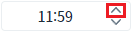
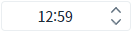
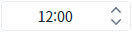
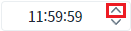
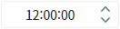
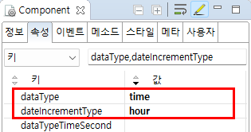
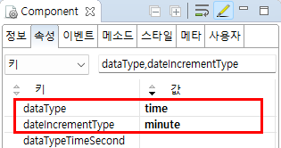
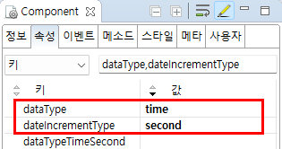

Spinner의 'dataType' 속성이 'time'으로 설정되었을 때, 'dateIncrementType'을 사용하여 데이터의 증감 단위를 설정한 예제입니다.
'dateIncrementType' 속성의 설정에 따른 기능은 아래와 같습니다.
dateIncrementType="hour" : 시 단위 증감
dateIncrementType="minute" : 분 단위 증감
dateIncrementType="second" : 초 단위 증감
'dateIncrementType' 속성은 'dataType' 속성의 설정 값이 "date" 또는 "time"으로 지정된 경우만 동작합니다.
증감 기능은 컴포넌트에 포함된 버튼을 클릭하거나 입력 영역(Input)에서 키보드의 방향키 "UP", "DOWN"을 눌러 사용할 수 있습니다.
시 단위 증감 설정
분 단위 증감 설정
초 단위 증감 설정
컴포넌트 우측에 구성된 버튼을 클릭하여 데이터의 증감을 확인합니다.
예제 영역 'dateIncrementType="hour"'에서 테스트합니다.Spinner의 초기 값은 '11:59'입니다.
1
STEP 1: Spinner의 증가 버튼을 클릭합니다.
Image 1.브라우저(Chrome) 실행 예시

2
STEP 2: 실행 결과를 확인합니다.
시 단위 '1'이 증가되어, '12:59'가 표시됩니다.
Image 2.브라우저(Chrome) 실행 예시

예제 영역 'dateIncrementType="minute"'에서 테스트합니다.Spinner의 초기 값은 '11:59'입니다.
1
STEP 1: Spinner의 증가 버튼을 클릭합니다.
Image 3.브라우저(Chrome) 실행 예시
2
STEP 2: 실행 결과를 확인합니다.
분 단위 '1'이 증가되어, '12:00'이 표시됩니다.
Image 4.브라우저(Chrome) 실행 예시

예제 영역 '예제타이틀'에서 테스트합니다.Spinner의 초기 값은 '11:59:59'입니다.
1
STEP 1: Spinner의 증가 버튼을 클릭합니다.
Image 5.브라우저(Chrome) 실행 예시

2
STEP 2: 실행 결과를 확인합니다.
초 단위 '1'이 증가되어, '12:00:00'이 표시됩니다.
Image 6.브라우저(Chrome) 실행 예시

1
STEP 1: 속성을 설정합니다.
[필수] dataType="time"
데이터 타입을 시간형으로 지정합니다.
[필수] dateIncrementType="hour"
증감 단위를 시 단위로 지정합니다.
[default:day, year, month, hour, minute, second] dataType이 date 또는 time인 경우에 버튼을 클릭하여 증가시킬 값.
dataType이 date인 경우 day, year, month, hour, minute만 설정 가능
dataType이 time인 경우는 hour와 minute, second만 설정 가능
Image 7.웹스퀘어 스튜디오의 Component View - 속성 설정 예시

Example 1.Source
<!-- spinner의 소스 본문 예시 --> <w2:spinner dataType="time" dateIncrementType="hour" id="spi_exam1"> </w2:spinner>
1
STEP 1: 속성을 설정합니다.
[필수] dataType="time"
데이터 타입을 시간형으로 지정합니다.
[필수] dateIncrementType="minute"
증감 단위를 분 단위로 지정합니다.
[default:day, year, month, hour, minute, second] dataType이 date 또는 time인 경우에 버튼을 클릭하여 증가시킬 값.
dataType이 date인 경우 day, year, month, hour, minute만 설정 가능
dataType이 time인 경우는 hour와 minute, second만 설정 가능
Image 8.웹스퀘어 스튜디오의 Component View - 속성 설정 예시

Example 2.Source
<!-- spinner의 소스 본문 예시 --> <w2:spinner dataType="time" dateIncrementType="minute" id="spi_exam2"> </w2:spinner>
1
STEP 1: 속성을 설정합니다.
[필수] dataType="time"
데이터 타입을 시간형으로 지정합니다.
[필수] dateIncrementType="second"
증감 단위를 초 단위로 지정합니다.
[default:day, year, month, hour, minute, second] dataType이 date 또는 time인 경우에 버튼을 클릭하여 증가시킬 값.
dataType이 date인 경우 day, year, month, hour, minute만 설정 가능
dataType이 time인 경우는 hour와 minute, second만 설정 가능
Image 9.웹스퀘어 스튜디오의 Component View - 속성 설정 예시

Example 3.Source
<!-- spinner의 소스 본문 예시 --> <w2:spinner dataType="time" dateIncrementType="second" id="spi_exam3"> </w2:spinner>
dataType
dateIncrementType
dataTypeTimeSecond